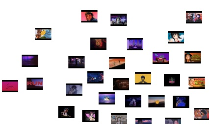
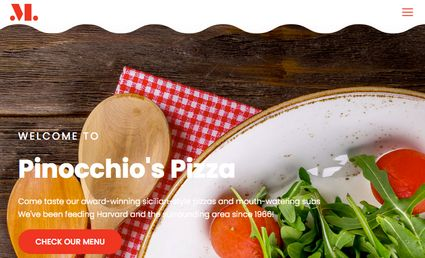
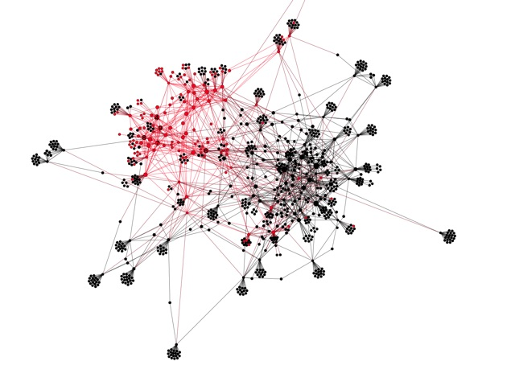
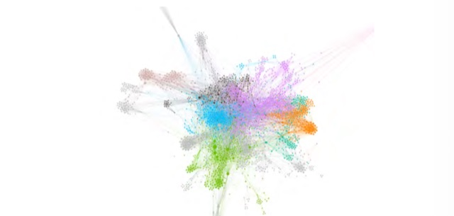
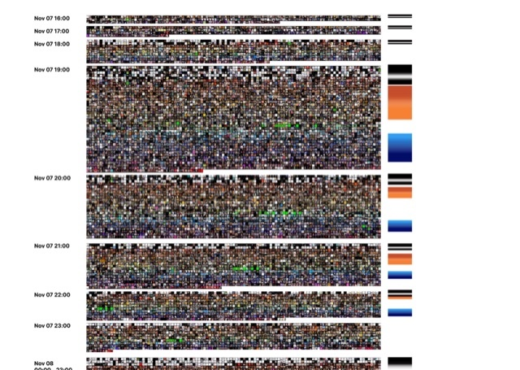

Sobre mim
About me
Sou uma pessoa curiosa que adora explorar a web e descobrir seus mistérios — cair em rabbit holes e tentar entender como fui parar lá. Me interesso por entender como comunidades online funcionam, como algoritmos moldam o que vemos, e como grupos de pessoas constroem realidades compartilhadas, às vezes bem distantes da nossa. Valorizo criatividade e imaginação, e acredito que as melhores perguntas surgem quando a gente se permite estranhar o que parece óbvio.
Sou doutor em Comunicação pela UFMG, com passagem pelo Politecnico di Milano como pesquisador visitante. Também tenho experiência profissional como desenvolvedor Python, tendo trabalhado com coleta de dados e construção de ferramentas de monitoramento de mídias sociais. Minha pesquisa combina métodos computacionais com teoria social: escrevo código para coletar dados e mapear redes, e leio teoria crítica para interpretar o que encontro. Já investiguei bolhas algorítmicas no YouTube, negacionismo climático e teorias da conspiração como o QAnon.
I'm a curious person who loves exploring the web and uncovering its mysteries — falling into rabbit holes and trying to figure out how I got there. I'm interested in understanding how online communities work, how algorithms shape what we see, and how groups of people build shared realities, sometimes quite far from our own. I value creativity and imagination, and I believe the best questions come when we allow ourselves to find the obvious strange.
I hold a PhD in Communication from UFMG, with a research stay at Politecnico di Milano. I also have professional experience as a Python developer, having worked with data collection and building social media monitoring tools. My research combines computational methods with social theory: I write code to collect data and map networks, and read critical theory to interpret what I find. I've investigated algorithmic filter bubbles on YouTube, climate denial, and conspiracy theories like QAnon.

Tube Plotter
Aplicação web que plota thumbnails do YouTube em grafos de rede extraídos do YouTube Data Tools e espacializados no Gephi. Permite navegar pelo grafo usando as thumbnails como nós.
Web application that plots YouTube thumbnails on network graphs extracted from YouTube Data Tools and spatialized in Gephi. Allows navigating the graph using thumbnails as nodes.
GitHubPuppybot
Bot do Bluesky que reposta imagens de cachorros. Utiliza classificação de imagens com TensorFlow e Keras para filtrar conteúdo indesejado.
Bluesky bot that reposts puppy images. Uses image classification with TensorFlow and Keras to filter unwanted content.
Perfil Profile
Pinocchio's Pizza
Site para uma pizzaria com funcionalidades de e-commerce: carrinho de compras, gestão de pedidos e painel administrativo para atualização do menu.
Website for a pizzeria with e-commerce features: shopping cart, order management, and admin panel for menu updates.
Visitar Visit
Recomendado Para Você: o impacto do algoritmo do YouTube na formação de bolhas
Estudo do impacto do sistema de recomendação do YouTube na diversidade de conteúdo, utilizando análise de redes e observação qualitativa de perfis simulados com diferentes orientações políticas.
Study of YouTube's recommendation system impact on content diversity, using network analysis and qualitative observation of simulated profiles with different political orientations.
Ler dissertação Read thesis
O negacionismo do aquecimento global no YouTube: uma análise exploratória
Análise exploratória da circulação de conteúdo negacionista sobre mudanças climáticas no YouTube brasileiro.
Exploratory analysis of climate change denial content circulation on Brazilian YouTube.
Ler artigo Read paper
I WON THIS ELECTION, BY A LOT! Trump Spectacle and Memetic Antagonism on Twitter
Análise das dinâmicas meméticas e do antagonismo político nas respostas ao tweet de Trump declarando vitória na eleição de 2020. Combina análise de redes, Google Vision API e visualização de dados para mapear padrões de imitação e confronto afetivo.
Analysis of memetic dynamics and political antagonism in replies to Trump's tweet declaring victory in the 2020 election. Combines network analysis, Google Vision API, and data visualization to map imitation patterns and affective confrontation.
Ver projeto View project